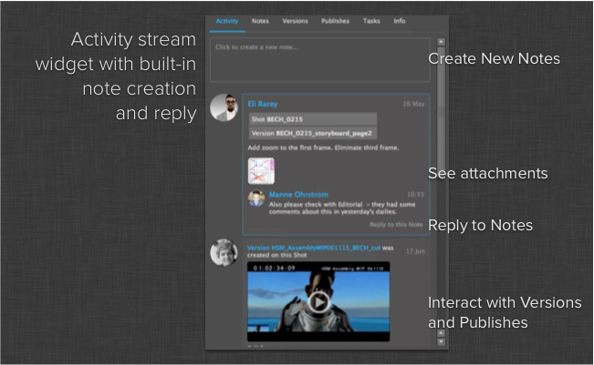

Shotgun Activity Stream Widget¶
Introduction¶
The activity stream widget is a QT widget that renders the activity stream for a given Shotgun entity. The functionality is similar to that in the activity stream found inside the Shotgun web application. Publishes and Versions show up with thumbnails, optionally with playback links. Notes show up with replies and attachments and you can reply to notes directly in the activity stream.
In addition to an activity stream widget, this module also contains a widget for displaying notes and replies. This uses the same data backend as the activity stream and has a similar look and feel.

Caching policy¶
All the content in the activity stream is cached and when you request the activity stream for an entity, the widget requests only the changes since the last update. The data is cached in a shared manner, meaning that a project, shot and task may be showing the same updates in their respective streams - and in this case, those updates are only pulled down once.
ActivityStreamWidget¶
-
class
activity_stream.ActivityStreamWidget(parent)[source]¶ Bases:
PySide.QtGui.QWidgetQT Widget that displays the Shotgun activity stream for an entity.
Signal entity_requested(str, int): Fires when someone clicks an entity inside the activity stream. The returned parameters are entity type and entity id. Signal playback_requested(dict): Fires when someone clicks the playback url on a version. Returns a shotgun dictionary with information about the version. Signal entity_created(object): Fires when a Note or Reply entity is created by an underlying widget within the activity stream. Returns a Shotgun dictionary with information about the new Entity. Variables: reply_dialog (dialog_reply.ReplyDialog or None) – When a ReplyDialog is active it can be accessed here. If there is no ReplyDialog active, then this will be set to None. Parameters: parent ( QWidget) – QT parent object-
set_bg_task_manager(task_manager)[source]¶ Specify the background task manager to use to pull data in the background. Data calls to Shotgun will be dispatched via this object.
Parameters: task_manager ( BackgroundTaskManager) – Background task manager to use
-
note_widget¶ Returns the
NoteInputWidgetcontained within the ActivityStreamWidget. Note that this is the widget used for NEW note input and not Note replies. To get the NoteInputWidget used for Note replies, access can be found viaReplyDialog.note_widget().
-
clickable_user_icons¶ Whether user icons in the activity stream display as clickable. If True, a pointing hand cursor will be shown when the mouse is hovered over the icons, otherwise the default arrow cursor will be used.
-
pre_submit_callback¶ The pre-submit callback. This is None if one is not set, or a Python callable if it is. This callable is run prior to submission of a new Note or Reply. Note that the first (and only) argument passed to the callback will be the calling
NoteInputWidget.Returns: Python callable or None
-
allow_screenshots¶ Whether this activity stream is allowed to give the user access to a button that performs screenshot operations.
Whether the button to navigate to Shotgun is shown in the stream.
-
version_items_playable¶ Whether the label representing a created Version entity is shown as being “playable” within the UI. If True, then a play icon is visible over the thumbnail image, and no icon overlay is shown when False.
-
ReplyListWidget¶
-
class
activity_stream.ReplyListWidget(parent)[source]¶ Bases:
PySide.QtGui.QWidgetQT Widget that displays a note conversation, including attachments and the ability to reply.
This will first render the body of the note, including the attachments, and then subsequent replies. This widget uses the same widgets, data backend and visual components as the activity stream.
Signal entity_requested(str, int): Fires when someone clicks an entity inside the activity stream. The returned parameters are entity type and entity id. Parameters: parent ( QWidget) – QT parent object-
set_bg_task_manager(task_manager)[source]¶ Specify the background task manager to use to pull data in the background. Data calls to Shotgun will be dispatched via this object.
Parameters: task_manager ( BackgroundTaskManager) – Background task manager to use
-